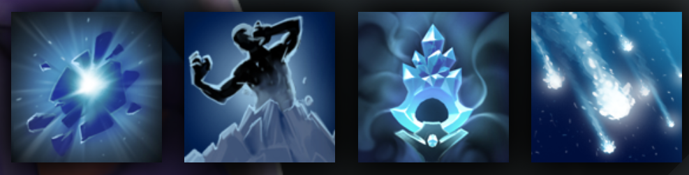

CRYSTAL MAIDEN
UNLEASHES A HIGH DAMAGE BLIZZARD UPON HER FOES
HISTORY
Born in a temperate realm, raised with her fiery older sister Lina, Rylai the Crystal Maiden soon found that her innate elemental affinity to ice created trouble for all those around her. Wellsprings and mountain rivers froze in moments if she stopped to rest nearby; ripening crops were bitten by frost, and fruiting orchards turned to mazes of ice and came crashing down, spoiled. When their exasperated parents packed Lina off to the equator, Rylai found herself banished to the cold northern realm of Icewrack, where she was taken in by an Ice Wizard who had carved himself a hermitage at the crown of the Blueheart Glacier. After long study, the wizard pronounced her ready for solitary practice and left her to take his place, descending into the glacier to hibernate for a thousand years. Her mastery of the Frozen Arts has only deepened since that time, and now her skills are unmatched.
ABILITIES
PAIRD WELL WITH
URSA
ALCHEMIST
ENIGMA